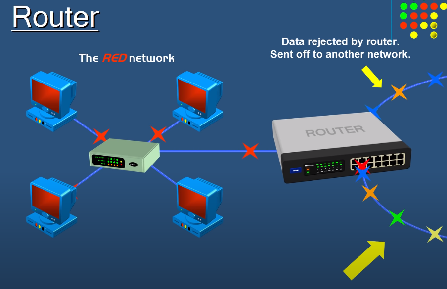
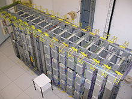
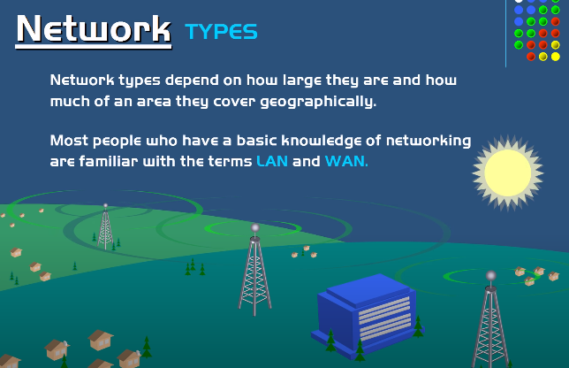
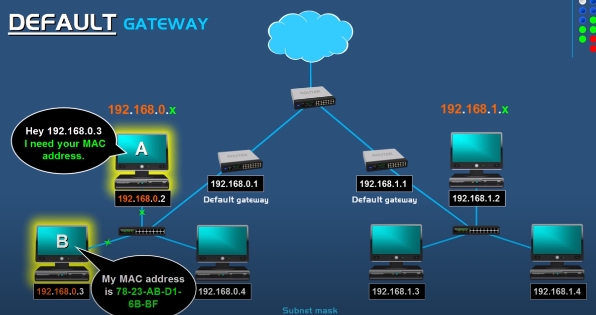
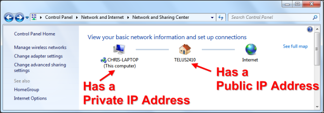
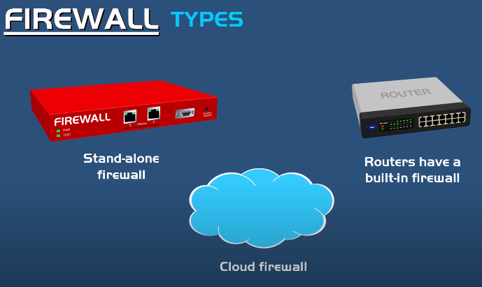
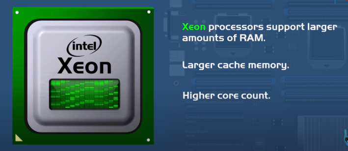
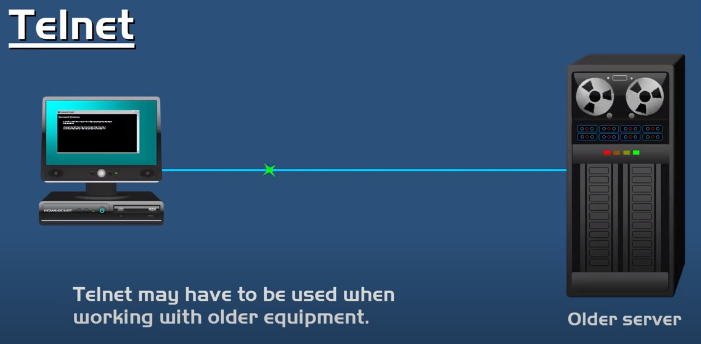
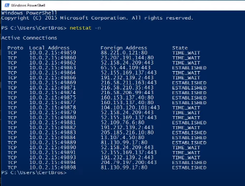

In this section we're going to talk about the
difference between a hub, a switch, and a router.
Now all three of these devices are similar, but there is
a difference in the way they handle data.
So we'll first talk about a hub.
Now the purpose of a hub is to connect all of your network devices together on an internal network.
It's a device that has multiple ports that accepts Ethernet connections from network devices
Now a hub is considered not to be intelligent because it does not filter any data or has any intelligence as to where the data is supposed to be sent. And that's because
the only thing a hub knows is when a device is connected to one of its ports.
So when a data packet arrives at one of the ports, it is copied to all of the other ports.
So all the devices on that hub sees that data packets.
So again, a data packet comes into one port then the hub will just
rebroadcast that data to every port that has a device connected to it.
So even a computer only
wanted to communicate with one of the
other connected computers, all the other computers would still receive the data,
even though that data was not intended for them.
So when this happens it not only creates security concerns, but it also creates unnecessary
traffic on the network, which wastes bandwidth.
Now a switch is very similar to a hub.
It's also a device that has multiple ports that accepts Ethernet connections from network devices.
But unlike a hub, a switch is intelligent. A switch can actually learn the physical
addresses of the devices that are connected to it and it stores these physical
addresses, called MAC addresses, in its table.
So when a data packet is sent to a switch, it's only directed to the intended destination port,
unlike a hub where a hub will just rebroadcast the data to every port.
So as an example, if a computer wanted to communicate with another
of the connected computers, the data packet would arrive at the switch and then the switch
would look at it's table of MAC addresses and matching ports and deliver the data
to the correct port. And then the data packet would only go to that computer.
So that's the major difference between a hub and a switch. So as a result
switches are far more preferred over hubs because they reduce any
unnecessary traffic on the network.
Now hubs and switches are used to exchange data within a local area network.
For example, such as in your home network or in a business.
They are not used to exchange data outside their own network, such as out on the internet.
Because to exchange or route data outside their own network to another network,
such as out on the internet, a device needs to be able to read IP
addresses. And hubs and switches do not read IP addresses.
So that's where the router comes in.
Now a router does exactly what it's name implies. A router is a device that routes or forwards data
from one network to another
based on their IP address. When a data packet is received from the router, the router
inspects the data's IP address and
determines if the packet was meant for it's own network or if it's meant for another network. If the router
determines that the data packet is meant for it's own network, it receives it.
But if it's not meant for it's own network, it sends it off to another network.
So a router is essentially the gateway of a network.
So let'e imagine we have a private network with it's router and refer to this as the 'red network',
indicated by the red colored screens on the computers. Also, let's imagine
different data packets are being sent to our network's router,
indicated by their different colors which represents different IP
addresses.

The data packets are going to be entering the red network's router from the internet.
Now the router is only going to accept the red data packets,
because they are the only ones that are intended for this network. So
all of the other data packets, the yellows, blues, greens, etc, will be rejected by this router
because they were not intended for this network, because their IP addresses were not meant for this network.
Now let's expand the view of routers over the internet. There are four networks here,
indicated by their different colors and each network has their own router,
along with their hubs or switches and their computers. So right now as you can see, each network is just
exchanging information within their own network.
So let's say for example that one of the computers on the red network
wanted to communicate with a computer on the blue network.
So for this to happen, the data packet has to leave their own network and go out on the internet.
So the computer sends their data,
and it goes to the network's router, and once the data packet reaches the router,
the Router will look at the IP
address of the data packet and then forward the data out on the internet to the next router and
then the router will look at the IP, send it to the next router, and eventually
the data packet will make it's way to the blue network's router and
then to the intended destination computer.
That's how routers work in a nutshell.
So in conclusion, hubs and switches are used to create networks while routers are used to connect networks
This section used content taken from the video bellow:
Modem vs Router
In this video we're going to talk about the difference between a modem and a router,
because a lot of people actually think that a modem and a router are the same thing
but they are not, they are different with two separate roles on a network
if you want internet inside your home
or business, you have to have a modem. A modem is what brings the internet into your home or business.
A modem establishes and maintains
a dedicated connection to your internet service provider
to give you access to the internet.
Now the reason why you have to have a modem is
because of the two different types of signals that are used on a
computer and on the internet.
A computer only reads digital signals, while signals out on the internet are analog.
As analog data comes in from the internet, the modem demodulates the incoming analog signals
into a digital signal so that a computer can understand it.
And a modem also
modulates outgoing digital signals from a computer into an analog signal as it goes out on the internet.
And this is where we get the word 'modem'. The word modem means modulator demodulator
which is exactly what a modem does. It modulates outgoing data from a computer and
demodulates incoming data from the internet
Now a router comes in after the modem. There are different types of routers
There are routers that are used in businesses and larger organizations
And there are smaller routers that are used in homes and small businesses,
but they all basically do the same thing.
A router is what routes or passes your internet connection to all of your devices in your home
or business. It directs it to all of your computers, tablets, phones and so on
so that those devices can access the internet.
A typical small office/home office router will have a built-in switch with multiple ports
so that you can connect multiple devices
using an ethernet cable connection
and it also functions as a WAP (wireless access point) so that wireless devices
such as tablets and laptops can have internet access.
Now technically you really don't need a router if you only want one of your devices to access the internet.
You can just plug that device's network cable directly into the modem, and then you'll be able to access the internet.
However, like most homes and businesses
you're going to have multiple devices that need access to the internet, and that's where you would need a router.
There are also different types of modems.
Two of the most common types are cable and DSL modems.
So depending upon what type of internet you're going to use, you need to use the correct type of modem.
Cable modems are connected to your home
using a coaxial cable.
Cable is typically provided by the same company that provides you with cable television
such as Comcast, which is one of the largest providers in the United States.
And DSL modems are connected using a typical phone line.
DSL is provided by companies such as AT&T, which is the largest provider in the U.S.
Now a lot of times your internet service provider
when they send you a modem, or if you were to buy one at the store,
the modem might be a modem/router
combination. So it will be a modem with a built-in wireless router in one physical device.
So in conclusion, over here we have the internet with all of it's routers,
as the internet is routed into our private network
it first reaches the modem, then it goes from the modem to it's router with it's integrated switch
This section used content taken from the video bellow:
How Telephones Work
This section is a quick overview of how telephones work,
it's good to have some basic understanding but really most
of the stuff explained in this section are not needed if you
only care about internet networking, so feel free to
skip this part if you aren't interested. This section is supposed to be
a preparation for the two following sections, in which I
will talk about DSL (Digital Subscriber Line) and VoIP (Voice over Internet Protocol).
Telephones are actually one of the simplest devices in your house.
HOWSTUFFWORKS.COM
Although most of us take it completely for granted,
the telephone you have in your house is one of the most
amazing devices ever created. If you want to talk to someone,
all you have to do is pick up the phone and dial a few digits.
You are instantly connected to that person, and you can have a
two-way conversation.
The telephone network extends worldwide,
so you can reach nearly anyone on the planet.
When you compare that to the state of the world
just 100 years ago, when it might have taken several
weeks to get a one-way written message to someone, you
realize just how amazing the telephone is!
Surprisingly, a telephone is one of the simplest devices you have in your house. It is so simple because the telephone connection to your house has not changed in nearly a century. If you have an antique phone from the 1920s, you could connect it to the wall jack in your house and it would work fine!
In this section, we will look at the telephone device that you have in your house as well as the telephone network it connects to so you can make and receive calls.
Telephone Design
A simple telephone
HOWSTUFFWORKS.COM
The very simplest working telephone would look like this inside.
As you can see, it only contains three parts and they are all simple:
A switch to connect and disconnect the phone from the network - This switch is generally called the hook switch. It connects when you lift the handset.
A speaker - This is generally a little 50-cent, 8-ohm speaker of some sort.
A microphone - In the past, telephone microphones have been as simple as carbon granules compressed between two thin metal plates. Sound waves from your voice compress and decompress the granules, changing the resistance of the granules and modulating the current flowing through the microphone.
That's it! You can dial this simple phone by rapidly tapping the hook switch -- all telephone switches still recognize "pulse dialing." If you pick the phone up and rapidly tap the switch hook four times, the phone company's switch will understand that you have dialed a "4."
The only problem with the phone shown above is that when you talk, you will hear your voice through the speaker.
A "real" telephone
HOWSTUFFWORKS.COM
Most people find that annoying, so any "real" phone contains a device called a duplex coil or something functionally equivalent to block the sound of your own voice from reaching your ear. A modern telephone also includes a bell so it can ring and a touch-tone keypad and frequency generator. A "real" phone looks like this.
Still, it's pretty simple. In a modern phone there is an electronic microphone, amplifier and circuit to replace the carbon granules and loading coil. The mechanical bell is often replaced by a speaker and a circuit to generate a pleasant ringing tone. But a regular $6.95 telephone remains one of the simplest devices ever.
Telephones: Wires and Cables
Telephone wires and cables connect your home phone to a huge communications web.
The telephone network starts in your house. A pair of copper wires runs from a box at the road to a box (often called an entrance bridge) at your house. From there, the pair of wires is connected to each phone jack in your house (usually using red and green wires). If your house has two phone lines, then two separate pairs of copper wires run from the road to your house. The second pair is usually colored yellow and black inside your house. (See What do the little boxes that the phone company has around our neighborhood do? for a description of the telephone boxes and wires that you see by the road.)
Along the road runs a thick cable packed with 100 or more copper pairs. Depending on where you are located, this thick cable will run directly to the phone company's switch in your area or it will run to a box about the size of a refrigerator that acts as a digital concentrator.
Digital Phone Calls
The concentrator digitizes your voice at a sample rate of 8,000 samples per second and 8-bit resolution (see How Analog and Digital Recording Works for information on digitizing sounds). It then combines your voice with dozens of others and sends them all down a single wire (usually a coax cable or a fiber-optic cable) to the phone company office. Either way, your line connects into a line card at the switch so you can hear the dial tone when you pick up your phone.
If you are calling someone connected to the same office, then the switch simply creates a loop between your phone and the phone of the person you called. If it's a long-distance call, then your voice is digitized and combined with millions of other voices on the long-distance network. Your voice normally travels over a fiber-optic line to the office of the receiving party, but it may also be transmitted by satellite or by microwave towers. (See How does a long-distance call work? for a more detailed description.)
Creating Your Own Telephone Network
Creating your own telephone network is a rather simple process. Learn about creating your own telephone network or a private intercom.
HOWSTUFFWORKS.COM
Not only is a telephone a simple device, but the connection between you and the phone company is even simpler. In fact, you can easily create your own intercom system using two telephones, a 9-volt battery (or some other simple power supply) and a 300-ohm resistor that you can get for a dollar at Radio Shack. You can wire it up like this:
Your connection to the phone company consists of two copper wires. Usually they are red and green. The green wire is common, and the red wire supplies your phone with 6 to 12 volts DC at about 30 milliamps. If you think about a simple carbon granule microphone, all it is doing is modulating that current (letting more or less current through depending on how the sound waves compress and relax the granules), and the speaker at the other end "plays" that modulated signal. That's all there is to it!
The easiest way to wire up a private intercom like this is to go to a hardware or discount store and buy a 100-foot phone cord. Cut it, strip the wires and hook in the battery and resistor as shown. (Most cheap phone cords contain only two wires, but if the one you buy happens to have four, then use the center two.) When two people pick up the phones together, they can talk to each other just fine. This sort of arrangement will work at distances of up to several miles apart.
The only thing your little intercom cannot do is ring the phone to tell the person at the other end to pick up. The "ring" signal is a 90-volt AC wave at 20 hertz (Hz).
Calling Someone
If you go back to the days of the manual switchboard, it is easy to understand how the larger phone system works. In the days of the manual switchboard, there was a pair of copper wires running from every house to a central office in the middle of town. The switchboard operator sat in front of a board with one jack for every pair of wires entering the office.
Above each jack was a small light. A large battery supplied current through a resistor to each wire pair (in the same way you saw in the previous section). When someone picked up the handset on his or her telephone, the hook switch would complete the circuit and let current flow through wires between the house and the office. This would light the light bulb above that person's jack on the switchboard. The operator would connect his/her headset into that jack and ask who the person would like to talk to. The operator would then send a ring signal to the receiving party and wait for the party to pick up the phone. Once the receiving party picked up, the operator would connect the two people together in exactly the same way the simple intercom is connected! It is that simple!
Telephones: Tones
In a modern phone system, the operator has been replaced by an electronic switch. When you pick up the phone, the switch senses the completion of your loop and it plays a dial tone sound so you know that the switch and your phone are working. (For more information on tones, see How Guitars Work.) The dial tone sound is simply a combination of 350-hertz tone and a 440-hertz tone, and it sounds like this:
You then dial the number using a touch-tone keypad. The different dialing sounds are made of pairs of tones.
1 = 697 Hz + 1,209 H
2 = 697 Hz + 1,336 Hz
3 = 697 Hz + 1,477 Hz
4 = 770 Hz + 1,209 Hz
5 = 770 Hz + 1,336 Hz
6 = 770 Hz + 1,477 Hz
7 = 852 Hz + 1,209 Hz
8 = 852 Hz + 1,336 Hz
9 = 852 Hz + 1,477 Hz
* = 941 Hz + 1,209 Hz
0 = 941 Hz + 1,336 Hz
# = 941 Hz + 1,477 Hz
A typical number that you dial sounds like this:
If the number is busy, you hear a busy signal that is made up of a 480-hertz and a 620-hertz tone, with a cycle of one-half second on and one-half second off, like this:
Telephones: Bandwidth
In order to allow more long-distance calls to be transmitted, the frequencies transmitted are limited to a bandwidth of about 3,000 hertz. All of the frequencies in your voice below 400 hertz and above 3,400 hertz are eliminated. That's why someone's voice on a phone has a distinctive sound. Compare these two voices:
The audio bellow is a normal voice:
The audio bellow is the same voice on the telephone:
You can prove that this sort of filtering actually happens by using the following sound files:
Call up someone you know and play the 1,000-hertz sound file on your computer. The person will be able to hear the tone clearly. The person will also be able to hear the 2,000- and 3,000-hertz tones. However, the person will have trouble hearing the 4,000-hertz tone, and will not hear the 5,000- or 6,000-hertz tones at all! That's because the phone company clips them off completely.
How does DSL compare to dial-up, cable, and fiber internet?
DSL stands for Digital Subscriber Line. Users get a high speed bandwidth connection from a phone wall jack on an existing telephone network. DSL works within the frequencies that the telephone doesn’t so you can use the Internet while making phone calls.
How does DSL work?
Many local phone services provide DSL offering High Speed Internet access delivered through existing telephone networks. Telephone wires carry hundreds of thousands of frequencies. Only a few thousand are for telephone communications so the telephone and DSL modem can work at the same time.

Modern main distribution frame
The MDF is a termination point within the local telephone exchange where exchange equipment and terminations of local loops are connected by jumper wires at the MDF. All cable copper pairs supplying services through user telephone lines are terminated at the MDF and distributed through the MDF to equipment within the local exchange e.g. repeaters and DSLAM.
A DSLAM, standing for Digital Subscriber Line Access Multiplexer, is a piece of hardware that splits the voice from the data traffic. This device is located within the POP (Point of Presence) of a local operator, also called the Exchange, property of the ISP or Internet Service Provider.
I explained what an Audio Switch is in the previous section I believe.
There are three main types of DSL technology.
DSL– Symmetrical connections offer equal bandwidth for upload and download speeds.
Asymmetrical DSL– This is the most popular type of DSL connection. Most people download more information than they are uploading. Because of this, an asymmetrical connection has more downstream bandwidth and less upstream bandwidth.
Very high-bit-rate DSL (VDSL and VDSL2) - Both types of VDSL are faster than ADSL. VDSL2 can reach speeds of 100 Mbps or faster.
Thanks to its use of copper phone lines, a DSL internet connection tends to get worse the farther you are away from your ISP’s hub. That could mean slow internet speeds and buffering—or worse, disconnections.
DSL vs dial-up
While DSL and dial-up both connect through phone lines, dial-up ties up the whole line and DSL doesn’t. This means that dial-up doesn’t let you use the internet and make phone calls at the same time. Plus, dial-up requires you to re-connect every time you want to access the internet.
A DSL connection, on the other hand, is always on. And, thanks to a special filter installed at the phone jack, the internet and phone signals don’t interfere with each other.
This allows you to use the phone and internet at the same time. (Don’t underestimate the convenience and saved time of an always-on connection—nobody wants to sit and wait for their mom to get off the phone just to check some email.)
DSL vs cable
Cable internet is high-speed internet delivered over copper coaxial cables. It uses the same infrastructure as cable TV, which is why it is widely available and why most of the internet service providers who offer cable internet also have cable TV packages.
Cable internet service providers transmit data between servers using this coaxial cable, and since TV itself takes up only a small portion of the cable's bandwidth, it leaves room for internet service to work within the same network
Cable uses coaxial cables to connect you to the internet, and those cables allow your internet connection to reach faster speeds than what DSL gets you. For example, cable internet can reach speeds up to 1,000 Mbps, while DSL internet caps at about 100 Mbps.
Cable internet technology also offers faster upload speeds than even VDSL2, which means you can post that new YouTube video online faster or send off that giant Excel spreadsheet to your boss without wasting much time.
But one way DSL gets the lead on cable internet is that it gives you a dedicated circuit. That means you don’t share your DSL internet lines with any of your neighbors. So if they hop online at the same time you do, your speeds don’t slow down.
With cable internet, you share part of your connection with any neighbors who use the same ISP. So if everyone around you uses Xfinity and you do too, your internet speeds will likely dip if everyone’s online at the same time.
DSL vs. fiber
If you can get fiber internet, I always recommend it over any other type of internet. This newer technology uses glass fibers and light signals to keep you connected to the internet, resulting in much faster speeds and a connection that doesn’t get worse over long distances.
The price for fiber internet has come down in recent years too. That means you might pay as much for a fiber connection as you would for a DSL plan, making the choice between fiber and DSL much easier,
but fiber internet still isn't available in many places.
DSL vs satellite
Satellite internet might be another alternative you’re considering if you live outside of town. But if you’ve got the choice between a faster DSL internet plan, like 50 to 100 Mbps, we say that’s a better choice than satellite.
Why? The main reason is that DSL internet costs a lot less than satellite. The average DSL internet bill is $50 a month, while the average satellite bill skyrockets to $123 a month. That’s a huge difference, and I doubt your budget would like it.
Another reason is that satellite internet has high latency. That’s how much time it takes for your data to leave your computer and travel to the server hosting the website you’re visiting, then back again. Satellite latency usually sits around 600 milliseconds (ms), while DSL latency hovers around 30 ms.
End of the section
So in this section we learned all the different ways you can connect to
the internet, here is a quick video that explains the differences in cables:
VoIP (voice over IP)
VoIP (voice over Internet Protocol) is the transmission of voice and multimedia content over an internet connection. VoIP allows users to make voice calls from a computer, smartphone, other mobile devices, special VoIP phones and WebRTC-enabled browsers. VoIP is a technology useful for both consumers and businesses, as it typically includes other features that can't be found on common phone services. These features can include call recording, custom caller ID, or voicemail to e-mail. It is also helpful to organizations as a way to unify communications.
The process works similarly to a regular phone, but VoIP uses an internet connection instead of a telephone company's wiring. VoIP is enabled by a group of technologies and methodologies used to deliver voice communications over the internet, including enterprise local area networks or wide area networks. A VoIP service will convert a user's voice from audio signals to digital data, then send that data through the internet. If another user is calling from a regular phone number, the signal is converted back to a telephone signal through things called geteways before it reaches that user.
VoIP can also perform routing of incoming and outgoing calls through existing telephone networks. However, some VoIP services may only work over a computer or VoIP phone.
How does VoIP work?
How does VoIP differentiate from traditional phone calls? First, we’ll need to debunk some jargon:
In terms of landline calls (or ISDN and PSTN), VoIP bypasses the national landline network’s copper wire by using data packets of information (usually audio) transmitted across a network. These IP packets are received over the packet-switched network, and ‘de-packetised’ as the voice you hear through your VoIP endpoint – the technical term for a VoIP desktop phone, VoIP mobile phone, soft phone application (VoIP Software), or other receiver. Mobile phones operate calls through connection to the PSTN (Public Switched Telephone Network), maintained via a terrestrial network of base stations.
Public Switched Telephone Network
PSTN stands for Public Switched Telephone Network, or the traditional circuit-switched telephone network. This is the system that has been in general use since the late 1800s.
Using underground copper wires, this legacy platform has provided businesses and households alike with a reliable means to communicate with anyone around the world for generations.
The phones themselves are known by several names, such as PSTN, landlines, Plain Old Telephone Service (POTS), or fixed-line telephones.
PSTN phones are widely used and generally still accepted as a standard form of communication. However, they have seen a steady decline over the last decade.
When you use VoIP, your voice is converted into digital information which is then transmitted in as data over the internet, unlike the way traditional phone lines work via a local phone provider.
For business phone systems, a Private Branch Exchange (PBX) refers to the main piece of tech that routes all your calls, using Session Initiation Protocol (SIP) in SIP trunks to make those connections. Modern PBXs are also called IP PBXs to indicate they use VoIP, rather than analogue connections (although now this is often assumed).
An IP PBX is essentially a phone system that uses VoIP to place and receive calls. Traditional PBXs used analogue connections, whereas IP PBX systems use internet connections and SIP Trunking (or alternative technology) to route calls to and from the traditional phone networks. On-premise refers to the fact that the system is housed or managed internally. This approach usually requires more up-front spend (capital expenditure) as well as in-house expertise. These systems will also need a SIP Trunk provider to function.
Hosted PBX systems are cloud-hosted, meaning the provider takes care of all functionality, security, updates and delivery.
All the user has to do is configure the setup of their system and users as they see fit. In many cases, the provider will even pre-provision phone hardware for you. Hosted systems are becoming increasingly popular, particularly for small businesses, as they require almost no capital expenditure or in-house expertise.
Your PBX can be a physical bit of hardware, run and maintained by you (or your IT department); however, with modern cloud solutions, your VoIP provider can usually run your PBX via the cloud – essentially a phone system combined with Software as a Service (SaaS). This allows you to control your system with a personal online control panel, resulting in instant access to your add-ons and personal features, as well as a real-time overview of your business telecoms.
SIP is the Session Initiation Protocol. In IP and traditional telephony, network engineers have always made a clear distinction between two different phases of a voice call. The first phase is "call setup," and includes all of the details needed to get two telephones talking. Once the call has been setup, the phones enter a "data transfer" phase of the call using an entirely different family of protocols to actually move the voice packets between the two phones. In the world of VoIP, SIP is a call setup protocol that operates at the application layer. You may have also heard of H.323, an ITU protocol with similar function.
SIP is a very flexible protocol that has great depth. It was designed to be a general-purpose way to set up real-time multimedia sessions between groups of participants. For example, in addition to simple telephone calls, SIP can also be used to set up video and audio multicast meetings, or instant messaging conferences.
A SIP trunk is the virtual version of an analog phone line. Using SIP trunks, a SIP provider can connect one, two, or twenty channels to your PBX, allowing you to make local, long distance, and international calls over the Internet.
VoIP is limited to transferring voice data over the internet whereas a SIP trunk has the ability to transfer packets of multimedia data.
Multimedia data is a combination of video, audio, text, graphics, still images, and animation data. A multimedia presentation is a synchronized and, possibly, interactive delivery of multimedia data to users.
SIP trunking integrates with VoIP phone systems making it an attractive solution for SMB that already use a VoIP.
A SIP “trunk” is installed virtually over your business’s existing Internet connection, reducing the need for multiple analog phone lines, decreasing the cost of maintenance. A business owner might prefer to retain standard lines for faxes and alarms.
So, I know all those stuff I talked about in this section can be confusing
for someone with no experience in networking, it is okay if you do not understand everything,
I don't understand every single thing at the time I am writing this section either,
I too am learning, the point is to understand that there is no magic in networking,
things work in certain ways, all you really have to get from this section is a basic understanding
of what the term VoIP is, that there are phones out there which work with internet, most of the
other stuff are telephone related topics that you are not really required ot know if you only
care about internet networking, but it sure is great to have some basic knowledge about those stuff.
Anyway, if you want a better explanation about VoIP the video bellow may help:
2.4 GHz vs 5 GHz WiFi: What is the difference?
Have you ever purchased a new Wi-Fi router and you notice that the router has both
2.4 gigahertz and 5 gigahertz frequency bands? Or maybe your existing router has both of them
And did you ever wonder why some routers have these dual bands?
So that's what we're going to talk about in this section?
Now a lot of Wi-Fi routers will only transmit one of these bands, which would be the
2.4 band and that's because it's the most common frequency and these are called single band routers
But a lot of newer Wi-Fi routers will transmit both the 2.4 and 5 gigahertz bands
And these are called dual band Wi-Fi routers
ow, the 2.4 band works pretty well
It's the standard band
But the problem is that it's not just a standard band that's used in Wi-Fi routers
It's also the standard band that's used in a lot of other devices, things like microwave ovens, cordless phones,
bluetooth devices, and wireless cameras, all used a 2.4 gigahertz band
and his became a problem because the fact that so many other devices use the 2.4 band, the signal became
overcrowded and was causing a lot of interference with
Wi-Fi signals and when this happens it slows down the Wi-Fi network speed and
Sometimes could cause you to lose connection to the Wi-Fi router
So that is why the 5 gigahertz band was added the 5 gigahertz band is a newer band
And so it's not as commonly used as the 2.4, so it's used by fewer devices
And because it's used by fewer devices, the 5 gigahertz is not as crowded
So there is no interference or minimal interference
So using the 5 gigahertz would relieve the problem related to slow network speeds and connection drops that will be caused by
interference from other devices
Another reason why the 2.4 is more vulnerable to
interference is because of the difference in wireless channels
Now if you're not familiar with what a wireless channel is,
a wireless channel is just a way to fine-tune and alter a frequency.
Sometimes you might need to change to a different channel
If you are experiencing interference from different wireless devices and changing to a different channel will give you that ability
The 2.4 gigahertz band has 11 channels to choose from but of these 11 channels
Only 3 are non-overlapping
So basically you have three solid channels to choose from. But the 5 gigahertz has more channels. It has
25 non-overlapping channels
And some other differences between a
2.4 and 5 gigahertz band is the speed and the range that they cover. The 2.4 gigahertz band
Transmits data at a slower speed than the 5 gigahertz
But it does have a longer range than the 5 gigahertz. The 5 gigahertz band transmits data at a faster speed
Than a 2.4 but it has a shorter range. The 5 gigahertz has a shorter range
Because it has a higher frequency and higher frequencies have a harder time
penetrating solid objects, such as floors and walls in a building
To make this section I used content taken from the video bellow:
Network Types: LAN, WAN, PAN, CAN, MAN, SAN, WLAN
Hello everyone, in this section we're going to
talk about the different network types. And these
network types depend on how large they are and
how much of an area they cover geographically..
Now most people who have a basic knowledge of
networking are familiar with terms such as LAN
and WAN. But in addition to those there are a few
more network types that a lot of people are not
familiar with. So that's what we're going to talk
about in this section.

So let's first talk about a
PAN. PAN stands for personal area network.
Now this is a type of network that is used
on a personal level. It's a small network that is
used for connecting devices such as smartphones,
tablets, and laptops. And they connect to
each other by using wireless technologies
such as bluetooth, infrared, and near
field communication or NFC. But they
can also connect by using a wired connection
such as a USB cable. PANs are generally used
for transferring small files such as music,
photos, calendar appointments, and so on.
And the next type of network is a LAN . Now
LAN stands for local area network. A local area
network is a group of devices such as computers,
servers, switches, and printers which are located
in the same building, such as in an office or in
a home. In other words, in close proximity to each
other. The most common type of LAN is an Ethernet
LAN, where two or more computers are connected to
Ethernet cables using a switch.
Now a WLAN or
wireless local area network is a local area
network that uses wireless communication instead
of wired communication. A wireless LAN is defined
as having at least two devices that use wireless
communication to form a local area network. A
wireless LAN will typically have a Wi-Fi router
or a wireless access point for wireless devices
such as laptops, tablets, wireless desktops, and
smartphones, to communicate. So in simple terms,
a wireless LAN is a LAN but without using
cables.
And the next network type is a CAN
Now CAN stands for campus area network. A CAN is
a network that joins two or more LANs together
within a limited area. So for example a CAN could
be a university that has multiple buildings in
the same general area that are connected to each
other to form a larger network. So these buildings
could be different departments on a University's
property with each building having their own LAN
in their department. And then the buildings
are connected to form a campus area network.
And the next network type is a MAN. MAN stands
for metropolitan area network. Now this is a
larger network than a CAN. It's a network that
spans over several buildings in a city or
town. MANs are typically connected using a high
speed connection such as fiber optic cable. It's
a high speed network that gives the ability
for sharing data and resources within a city.
And the next one is a SAN or storage area
network. Now a SAN is a special high speed
network that stores and provides access to
large amounts of data. Basically what a SAN is,
is that it's a dedicated network that's used for
data storage. This network consists of multiple
disk arrays, switches, and servers. One of
the main reasons for using a SAN is because
SANs are not affected by network traffic
such as bottlenecks that can happen in
a local area network. And that's because SANs
aren't really a part of a local area network,
it's partitioned off. It's a network all by
itself.
And then finally there's the wide
area network or WAN. A WAN is the largest type
of network. A WAN includes multiple LANs, CANs,
and MANs. It's a network that spans over a large
geographical area such as a country continent
or even the entire globe. A good example
of a wide area network is the internet.
To write this section I used content taken from the video bellow:
VLAN (Viertual Local Area Network) Explained
VLAN stands for Virtual Local Area Network.
A VLAN is a local area network where the computers, servers, and other network devices
are logically connected
regardless of their physical location.
So, even if these devices are scattered in different places, it wouldn't matter.
Because a VLAN can logically group them into
separate virtual networks. And the purpose of a VLAN is for improved security,
traffic management, and to make a network simpler.
So as an example,
let's say you have a three-story office building and in this building you have computers that
belong to certain departments that are mixed in with computers that belong to other departments on the same floor.
So, the red computers represent the accounting department;
The blue computers represent the shipping department; and the green computers
represent the support department.
Now as you can see, all these computers from these different departments are all connected to a switch.
So, they are all on one segment on a local area network or LAN.
So, all the network broadcast traffic are mixed in with other departments.
So, the departments are all seeing each other's network traffic. Now suppose as a network administrator
You wanted to separate the network broadcast traffic from these departments from each other, so that the accounting department
doesn't see any traffic from support,
support doesn't see any traffic from shipping and so on. Now one way to solve this is to physically move the
computers that belong to the same department and put them together such as putting them on the same floor and
deploying extra network hardware and cabling. But, that could be a hassle and
unnecessary work.
But there is an easier way to accomplish this and that is by creating VLANs.
By using VLANs on a VLAN capable switch you can logically create several
virtual networks to separate network broadcast traffic.
So, in this case, we're going to create three VLANs for the three different departments.
So, we're going to create a VLAN for the accounting department and
then we'll create another VLAN for the support department;
And then we'll create one for the shipping department.
So now as the VLANs are implemented the traffic between the three departments are isolated.
So they won't see any traffic
created from the other departments.
They will only see their own network traffic even though all the computers from the different departments
share the same cabling and switch.
So in our example the VLANs were created on the switch and this is done by
designating specific ports on the switch and assigning those ports to a specific VLAN.
So on the switch will create a VLAN for the support department.
So we'll plug all the computers that belong to the support department into those ports.
Then we'll designate another set of ports on the switch and create another VLAN for the accounting department.
And finally, we'll designate another set of ports on the switch for another VLAN for the shipping department.
And, as you can see the network traffic is separated between the departments because of the VLANs.
This section used content taken from the video bellow:
WAP (Wireless Access Point) vs Wi-Fi Router
First let's talk about the Wi-Fi Router. Almost everyone who has an internet connection
in their home has a Wi-Fi router, that Wi-Fi router is either a seperate device or it is
built into their modem. A Wi-Fi router is what allows multiple wired and wireless devices
to join together in a local area network. It'll broadcast a Wi-Fi signal so that wireless devices
can connect to it and it will also have a built-in switch with several network ports
so that wired devices can connect to it using Ethernal cables. And then that Wi-Fi router will
directly connect to a modem to give those devices internel access.
Now let's talk about a wireless access point. A wireless AP relays data between
a wired network and wireless devices. It's basically a wireless hub
that's used by wireless devices to connect to an existing wired network.
A wireless AP connects directly to an organization's router where the router
is then directly connected to a modem, which gives the wireless devices access to the
internet.
Now wireless access points are primarily used by
medium to large organizations and typically an
organization will have multiple access points
to make sure it covers the entire building. So
for example here we have a medium sized office.
And this office has desktop computers, laptops,
and tablets.
So the desktop computers will connect
to the organization's router using Ethernet cables.
But in order for the wireless laptops and tablets
to connect to the network, this office is going to
use wireless access points. So the access points
are going to be placed in strategic places and
each of them will connect to the router using an
Ethernet cable. Then once that is done they will
all broadcast a Wi-Fi signal so that the laptops
and tablets can connect wirelessly and join this
network so now all the desktop computers and
wireless devices are joined together in one
network. And that one network is managed by one
single router and because wireless access points
are managed by a single router, that is one of
the main reasons why larger organizations use
wireless access points instead of Wi-Fi routers.
Now in reality this office here can use Wi-Fi
routers instead of wireless APs and it would
work just fine. But the problem with using Wi-Fi
routers instead of wireless APs is manageability.
If the network administrator wanted to manage this
network and make certain changes, he would have
to log into each Wi-Fi router to make that change.
And that could be a hassle and time-consuming
especially if there were a lot of Wi-Fi routers.
But if this office was using wireless access
points instead, then all the management and all
the changes in the configuration would be done by
this single router. Which makes managing a network
a lot easier. So all the wireless devices can
be treated as a single subnet instead of being
treated as multiple subnets if Wi-Fi routers
were used.
Another difference between these is
how devices are able to connect to them. Wireless
access points are strictly for wireless devices to
connect to, where as Wi-Fi routers are able to
accept connections from both wireless devices
and wired devices. Because in addition to having a
Wi-Fi antenna Wi-Fi routers will also have a built
in switch to accept Ethernet cable connections.
Another difference is a firewall. Wireless access
points don't have a firewall, while Wi-Fi routers
will have a firewall.
Wi-Fi routers will also have
a built-in DHCP service. A DHCP service is what
automatically assigns IP addresses to devices
that are connected to it. So when devices connect
to a Wi-Fi router, it's built-in DHCP service will
directly assign those devices an IP address.
But since Wireless APs don't have a DHCP service, the
devices that are connected to it will get its
IP address from the organization's router. So
once a device connects to the wireless AP, the
router will send the IP through the wireless
access point and then to the device.
And another difference is that Wi-Fi routers will have a WAN
port or internet port. A WAN or internet port is
where you would plug in a network cable coming
in from your modem. And this is what gives your
Wi-Fi router an internet connection so it can
pass it on to other devices, whereas a wireless
access point doesn't have a WAN or internet port.
So it cannot directly connect to a modem. It has
to connect directly to a router instead and then
the router is what connects to a modem .
And on a final note wireless access points are often
used to further extend a network's existing
wireless signal. So for example if you
needed to extend your Wi-Fi signal further into
your home, you could attach a wireless access point
using a network cable to the Wi-Fi router so that
distant devices can connect to the Wi-Fi signal.
This section used content taken from the video bellow:
IPv4 vs IPv6
An IP address is a numeric address.
It's an identifier for a computer or
device on a network. Every device has to
have an IP address for communication
purposes. The IP address consists of two
parts. The first part is the network
address and the second part is the host
address. There are also two types of IP
addresses. The first one is the most
common one, it's called IP version 4 and
a second type is IP version 6.
IP version
4 is the current version of IP addresses.
It's a 32-bit numeric address written as
four numbers separated by periods. Each
group of numbers that are separated by
periods is called an octet. The number
range in each octet is 0 to 255. Now,
255 is 11111111 in binary,
so in order for each octet to have a range
between 0 and 255 each octet should be 8bit, which
is why they are called octets after all, 8 in
greek is called octo, there are 4 octets, so that
equals 32 bits, and so that explains why IPv4 is
called a 32-bit numeric address. This
address version can produce over 4
billion unique addresses.
In the world of computers and networks
the ip address in the format above is
meaningless. Computers and networks don't
read IP addresses in this standard
numeric format and that's because they
only understand numbers in a binary
format. A binary format is a number that
only uses 1s and 0s The binary
number for the IP address 66.94.29.13
for example is
01000010.01011110.00011101.00001101
Converting binary to demical is a simple process, which I'm
not gonna explain, you can find a lot of tutorials online if you
search.
When the internet was first developed,
programmers didn't realize how big it
would become. They thought that IP version
4, which produced over 4 billion
addresses, would be enough. But they were
wrong. IP version 6 is the next
generation of IP addresses. The main
difference between IP version 4 and IP
version 6 is the length of the address.
The IP version 4 address is a 32-bit
numeric address.
Whereas IP version 6 is a 128 bit hexadecimal address.
Hexadecimal uses both numbers and
alphabets in the address. So with this
type of address, IP version 6 can produce
an unbelievable 340 undecillion IP
addresses. That's the number 340 with 36
digits after it. So as you might have
guessed, IP version 6 is more than enough
for the foreseeable future.
So, an IPv6 adress is made up of 8 sets of 16 bits,
each hexadecimal
character represents 4 bits. So we have
to convert 4 bits at a time to get one
hexadecimal character. Let's say the first
16 bits were 0010011011011011. So starting from
the beginning, we convert the first 4
bits by those bits up there against
our 4-bit chart which includes an 8, 4, 2,
and a 1, exactly as if were converting them to
a demical number. So if we count the numbers that
we have 1s underneath them, you wind up
with a 2.
So a '2' is the first hexadecimal character
in this IP version 6 address.
So let's do the next four bits and put
those under our four bit chart
So if we count all the numbers that we have
1s underneath them, we have a '4' and a '2'
and if we add those up we get 6. So a '6'
is the second hexadecimal character in
this IP address
So let's do our next set of 4 bits.
And if we add all the numbers that we
have 1s underneath them, we get a total
of 13. But the problem is since
13 is a double-digit number, we
cannot use a double-digit number to
represent 4 bits. And that's because
in a hexadecimal format, double-digit
numbers have to be represented with a
single alphabet which is 'A' through 'F'. So
in this case we have to use another
chart for any 4 bits that the sum is
10 or higher. So in this chart up here, if
the sum was 10, then we would use the
letter 'A'. Or if the sum was 11, then we
would use a 'B'. But in this case our sum
is 13. So now for the third character in
our binary number we would put a 'D'
So in our last example let's do the
fourth set of bits. And if we add those
up we get 11. So we have a double-digit
character again which means that we have
to convert it to a single character
alphabet. So if we look at our chart, 11 converts to a 'B'.
So the first 16 bits of this binary IP
version 6 address, converts to the
hexadecimal address as 26DB.
This section used content taken from the video bellow:
Default Gateway Explained
What is a default gateway? So
that is the topic of this video.
Now as a demonstration on a Windows computer, let's
check the network configuration. So if you open up
a command prompt and then you type in ipconfig
in the output you'll see the IP address,
subnet mask, and the default gateway that's
been assigned to this computer.
So you might
be asking yourself, well what is a default gateway?
And simply put, a default gateway is a device that
forwards data from one network to another. And the
majority of the time, this is going to be a router.
So for example here we have a local area network
with a router, a switch, and the computers.
On the other side of the router we have the
internet, which is another network. So in order for
these computers to access another network, such
as a web page out on the internet, the data has
to exit it's own local network by going through the
default gateway, which is the router. And then the
router will forward the data to the internet.
Now
this also works both ways. So if a device on the
internet wanted to communicate with a computer on
this network, it has to go through this network's
default gateway and then to the computer. So
in a nutshell, that's what a default gateway is.
It lets devices from one network communicate with
devices on another network. And as I said before,
this is typically going to be a router. A router
is the gateway or doorway to every network. And
the term default means that the designated
device is the first option that's looked upon
when data needs to exit the network.
Now if
computers of the same network wanted to communicate with each
other, they could just talk directly to each other
through the switch. And this is because they are on the same network. Their data
doesn't have to exit the network and go through
the default gateway.
So this brings us to our next
question. And that is, if these computers wanted to
communicate with another computer, how do they know whether that computer is on their own network
or if it's on a different network? And this is where the IP address and
subnet mask come in.
An IP address consists of two
parts. The first part is the network address and
the second part is the host address. So the way
for a computer to
tell which portion belongs to either the network
or the host, is where the subnet mask comes in.
A subnet mask is a number that resembles an IP
address. And it reveals how many bits in the IP
address are used for the network by masking the
network portion of the IP address.
Bellow we have
the IP address and subnet mask in binary form. So
the way to tell which portion of this IP address
is the network portion, is when the subnet mask
binary digit is a 1 it will indicate the position
of the IP address that defines the network. So
we'll cross out all the digits in the IP address
that line up with the 1s in the subnet mask. And
when you do this, it will reveal that the first
three octets or sets are the network portion
and the remaining is the host portion.
So here we have a private network that has
been divided into two sub networks or subnets.The
subnet on the left is on the 192.168.0 network and the
subnet on the right is on the 192.168.1 network.
And each subnet has their own default gateway.
Now let's say that computer A wanted to
communicate with computer B on the left subnet.
So computer A is going to check computer B's IP
address to see if it's on the same network or not.
And as you can tell, the two computers are on the
same network because the network portion of the IP
addresses, which are the first three octets, are the
same. So computer A now knows that computer B is on
the same network. So now in order for communication to take place, computer A needs computer B's MAC
address. And it finds this by sending out an ARP
broadcast out on the network asking computer B
for its MAC address. Then once it has the MAC
address, communication can finally take place.

So in another scenario let's say that computer
A on left subnet wanted to communicate with
computer D on right subnet. So again computer
A is going to check computer D's IP address
to see if it's on the same network or not. And
as you can tell this time, the two computers
are on different networks because the network
portion of the IP addresses, which are the first
three octets, are different. And the difference
is the third number. Computer A is using a 0
and computer D is using a 1. So computer A now
knows that computer D is on a different network.
So it can't directly communicate with it, it has
to use the default gateway. So computer A will
send out an ARP broadcast and this time it'll ask
for the MAC address of the default gateway and not
the computer, because computer D is on a different
network and it won't receive the broadcast because
ARP broadcasts cannot go past a router. Then once
it has the MAC address, it'll send the data to the
default gateway and then it'll be forwarded to the
destination.
This section used content taken from the video bellow:
NAT Explained - Network Address Translation
So, in the previous section I talked about
the default gateway IP, this actually works as a gate to all
the private IPs assigned to your devices by your router,
however, your gateway ip is not your public ip adress,
your public IP adress is assigned to your router by your ISP aka
Internet Service Provider and it's the ip
you use to access the internet. NAT is the proccess
that takes place behind the scenes so that your router can
identify to which computer to send which data when
you are accessing the internet.
When you access a website for example,
you send data outside your local network,
which your computer can tell by using
the Subnet Mask ip like I explained
in the previous section,
so the data will be sent to your
default gateway, which is your
router, and will then be forwarded to
the internet using your public ip address,
then the website will send data back to your
public ip address, which will lead to your router,
the website cannot access your local/private ip,
so the router will need a way to tell that
this data should be forwarded back to you, and
so that's where Network Address Translation (NAT)
comes in to 'translate' that public ip address to
the destined computer's private ip address, so that it can
be forwarded to the correct computer.
Public IP Addresses Are a Limited Resource
There are less than 4.2 billion available IPv4 IP addresses.
In other words, there are more connected devices on the planet than
there are unique, public IP addresses for them. The Internet is running
out of IPv4 addresses, even though we’re rationing them.
Rather than your Internet service provider assigning a unique public
IP address to each device in your home – you would need an additional IP
address every time you bought a new computer, tablet, smartphone, game console,
or anything else – your ISP generally assigns you a single IP address
Public vs Private IP Addresses
Your router is connected directly to the Internet,
and it’s assigned your public IP address (which may change over time).
Your router is then responsible for sharing your public IP address among the
other computers and connected devices in your home.
Your router assigns local IP addresses to your connected devices.
This allows them to communicate amongst each other behind your router in your home.
However, these local IP addresses aren’t reachable from the Internet.
In other words, your public IP address might be something like 23.24.35.63.
Anyone on the Internet can try to connect to this address, and they’d reach your router.
Your computer’s private IP address might be something like 192.168.1.100. When someone
on the Internet tries to connect to this address, their computer will look for the
address 192.168.1.100 on their local network.

If this is a bit confusing, try thinking about an office building.
The office building’s address may be 500 Fake Street, Fake Town, USA.
Anyone can send mail to this address from anywhere in the world – this address
is equivalent to a public address. An office in the office building might be “Room 203.”
Like local IP addresses, “Room 203” isn’t a globally unique address – it’s used in many
office buildings. You can’t address mail directly to Room 203 if you live on the other
side of the world. You have to address mail to the office building itself.
Network Address Translation (NAT) & Port Forwarding
When you connect to something on the Internet – a website, for example –
your computer sends the packets through your router. Your router modifies
packets and assigns a unique port to each outgoing connection on the router.
When the website or other server sends data back to you, it sends the data back
to that specific port, and your router knows it should send the data back to the
same device that initiated the original connection. This is how routers handle Internet
traffic for multiple computers at once using a single IP address and knows where all
the traffic should go.
However, this can break down when dealing with unrequested incoming traffic.
For example, if someone tries to connect to your router’s IP address on their
own accord, your router has no idea where it should send that traffic.
All your router can do is take the traffic and discard it.
This essentially means that your router acts as a sort of firewall,
discarding unrequested inbound traffic.
If you want to receive this incoming traffic, you can set up
port forwarding on your router. For example, you could tell your
router that you’re running a Minecraft server on port 25565 at a
specific local IP address. When your router receives a connection
on port 25565, it knows it should pass that traffic through to the
local IP address you specified. This is why port forwarding is necessary
for applications that function as servers and receive unrequested inbound
traffic from outside your local network.
What is a Firewall?
A firewall is a system that is designed to
prevent unauthorized
access from entering a private network by
filtering the
information that comes in from the internet.
A firewall blocks
unwanted traffic and permits wanted traffic.
So a firewall's purpose is to create a safety
barrier between a private network and the
public internet.
Because out on the internet, there's always
going to be hackers and malicious traffic
that may try to penetrate into a private network
to cause harm.
And a firewall is the main component on a
network to prevent this.
And a firewall is especially important to a large
organization that has a lot of computers and
servers in them.
Because you don't want all those devices
accessible to everyone on the internet where
a hacker can come in and totally disrupt that
organization.
That's why you need a firewall to protect
them.
A firewall that's used in computer networks
is very similar to how a firewall works in a building
structure.
In fact..this is where the word 'firewall'
came from. A firewall in a building structure
provides a barrier so that in the event of
an actual fire, on either side of a building,
the firewall is there to keep the fire contained
and to keep it from spreading over to the other
side.
So the firewall is there to keep the fire from destroying
the entire building.
But if the firewall wasn't here, the fire
would spread to the other side and the whole
building would be destroyed.
And a network firewall works in a similar
way as a structure firewall. It stops harmful
activity before it can spread into the other side
of the firewall and cause harm to a private
network.
In today's high-tech world, a firewall is
essential to every home and especially a business
or an organizaton to keep
their network safe.
A firewall works by filtering the incoming
network data
and determines by it's rules if it is
allowed to enter a network, these rules are
also known as an access control list.
These rules are customizable and are determined
by the network administrator.
The administrator decides not only what can
enter a network but also what can leave
a network.
So as an example, here we have some rules in a firewall's access control
list.
It shows a list of IP addresses that
have been allowed or denied by this firewall.
And as you can see, traffic from some IP
addresses are allowed to enter this network but
traffic from one IP address has been denied.
So, if traffic from the IP address that is denied tried to
get into this network, the firewall will deny
it because
of the rules that are set in the firewall.
But the other IP
addresses are granted access because the rules
allow them.
Firewalls don't just make rules based in
IP addresses, but they can also make rules based
on domain names, protocols, programs, ports, and keywords.
Firewalls come in
different types.
One
type is called a host-based
firewall, and this
is a software firewall.
This is the kind of
firewall that is installed
on a computer and it
protects that computer
only and nothing else.
For example, later
versions of Microsoft
operating systems come
pre-packaged with a
host-baseball firewall.
There are also 3rd party host-based firewalls
can be purchased and installed on a computer.
So for example, Zone Alarm..which is a popular 3rd
party host-based firewall.
And also a lot of antivirus programs will
have a built in host-based firewall.
Another type of firewall is called a network-based
firewall.
A network-based firewall is a combination
of
hardware and software, and it operates at
the network
layer.
It is placed between a private network and the public internet
But unlike a host-based firewall, where it
only protects that computer, a network-based
firewall protects the entire network, and it
does this
through management rules that are applied
to the
entire network so that any harmful activity
can be
stopped before it reaches the computers.
Network-based firewalls can be a stand alone
product which is mainly used by large organizations.
They can also be built-in as a component of
a router which is what a lot of smaller organizations rely on.
Or they can also be deployed in a service
provider's cloud infrastructure.

Now, alot of organizations will use both network-
based and host-based of firewalls.
They will use a network-based firewall to
protect the entire network as a whole and
they will also use host-based firewalls for
their individual protection for their computers
and servers.
And by doing this, it'll ensure maximum protection.
Because if harmful data just so happens to
get passed the network firewall the host
based firewalls on each computer will be there
to stop it.
This section used content taken from the video bellow:
What is a Server? Servers vs Desktops Explained
What is a server? So that is a topic of this
video. Now a server is basically a dedicated
computer that provides services on behalf of
clients, such as ordinary desktop computers
or workstations. So it's a centralized machine
where multiple clients connect to, either over
the Internet or in a local area network, and they
connect to a server for a specific service.
So
for example, that service could be to retrieve a
website, to access data, or email, and so on. Now
a server could be dedicated to handle one of these
services only, where you would have one server
dedicated for a website, one server for data
storage, and a server for email. And this model is
what larger organizations use.
Or you can also set
up a server to handle each of these services on
the same machine which is what typically happens
in smaller organizations.
So depending upon which
setup is used it all depends on the needs of an
organization. Now when people talk about a server
generally they are referring to a powerful
centralized computer that clients connect to
over a network, and they would be correct on that.
However a server is not just a physical computer.
A server is actually a role that a computer takes.
Because any ordinary desktop computer can be set
up as a server and it doesn't necessarily have to
be a powerful computer. So for example you can set
up a network in your home where you can have an
ordinary desktop computer serve as a file server.
The computer would have those files in a shared
folder and then other computers can't connect to
it to access those files. Or you can also use
a desktop computer to serve as a web server,
where you would install the website data on that
computer and then the other computers can connect
to it and retrieve the webpage.
However desktop
computers do have their limitations because they
are not designed to handle a large workload and
they can't handle a lot of incoming connections
from users. And this is not only because of their
inferior hardware, but it's also because of software.
Because desktop operating systems are only able to
handle a limited amount of concurrent connections.
Now servers need to be up and running 24/7 because
they are vital to an organization. And if a server
does go down then that could jeopardize a business
or an organization. So this is why servers need to
be more reliable. They need to be built with robust
hardware that's able to run non-stop with little
to no downtime.
So for example, a desktop would
use a processor that's designed obviously for
desktops, such as the Intel core series processors.
And a server would use a processor designed for
servers such as the Intel Xeon processor. A server
processor needs to be fast and have the ability to
perform a lot of tasks simultaneously.
Now both
of these processors are powerful but there are
some differences. So for example, Xeon processors
support a multi processing environment. So they
are designed to work with other processors. Which
means you can put two or more Xeon processors on
a motherboard designed for servers, which is what
a lot of servers need to handle a large workload.
But desktop processors do not support this, they
are only designed to work by themselves and not
with other processors.
And another difference
is that Xeon processors support ECC RAM, which
is error code correcting memory. And this type
of memory is what's mainly used in servers. Now
servers need to be up and running at all times
and memory errors could bring down a server and
what ECC does is that it detects if the data was
correctly processed by the RAM module and it makes
a correction if it needs to to prevent memory
errors. So using ECC memory in servers is just
an extra precaution to guard against any errors to
prevent a server from shutting.
Intel Core
processors do not support ECC Ram, however AMD
processors do so support it.
Xeon processors can also
support a larger amount of RAM. They would have
a larger cache memory. And they would also have
a higher core count than desktop processors.

And a
server should also have hot swappable hard drives
in a RAID configuration because if a hard drive
were to fail then no data loss would happen and
the server would still be up and running because
of RAID. RAID is what copies that data on multiple
disks and if a hard drive were to fail then it
can be removed and replaced without shutting
down the server. And then RAID would rebuild
the data on the new hard drive automatically.
And a server should also have redundant power supplies to
keep the server up and running
in case of a power supply failure.
And a server also needs to use a server operating
system, such as Linux, Windows Server, mac OS server
and so on. Server operating systems are robust and
stable and they are designed to run non-stop and
are able to handle thousands of concurrent
connections.
Now there are many different
types of servers and when I say types I'm
talking about the type of service that the
server provides. So for example, a web server.
A web server is what hosts a website. So any
website that you go to with your web browser,
you are connecting over the Internet to that
web server to pull up the web site you want. The
web server will contain all of the website's
data, including the HTML code and graphics and
it will also be running the web server software.
A static web server, or stack, consists of a computer
(hardware) with an HTTP server (software). We call it "static"
because the server sends it's hosted files as-is to your browser.
A dynamic web server consists of a static web server plus extra software,
most commonly an application server and a database.
Another type of server is an email server an
email server is what facilitates the sending
And receiving of email and you would access the
email using your web browser or you can use an
email client such as Outlook or Thunderbird
using email protocols such as IMAP, POP, and
SMTP.
And a database server is another type
of server. This type of server stores data
on the backend and then it's retrieved from
computers on the front end, for example using
queries such as SQL.
This section used content taken from the video bellow:
How a DNS Server (Domain Name System) works
In the world of networking, computers
don't go by names like humans do, they go
by numbers, because that's how computers
and other similar devices talk and
identify with each other over a network,
which is by using numbers such as IP
addresses. Humans on the other hand are
accustomed to using names instead of
numbers,
whether is talking directly to another
person or identifying a country,
place, or thing, humans identify with
names instead of numbers. So in order to
bridge the communication gap between
computers and humans and make the
communication of a lot easier,
networking engineers developed DNS, and
DNS stands for a domain name system.
DNS
resolves names to numbers, to be more
specific
it resolves domain names to IP addresses.
So if you type in a web address in your
web browser, DNS will resolve the name to
a number because the only thing
computers know are numbers. So for
example if you wanted to go to a certain
website you would open up your web
browser and type in the domain name of
that website, so for example let's use
yahoo.com. Now technically you really
don't have to type in yahoo.com to
retrieve the Yahoo web page, you can just
type in the IP address instead if you
already knew what the IP address was, but
since we are not accustomed to
memorizing and dealing with numbers,
especially when there are millions of
websites on the internet, we can just
type in the domain name instead and let
DNS convert it to an IP address for us.
So back to our example, when you type in
yahoo.com your web browser,
the DNS server will search through it's
database to find a matching IP address
for that domain name, and when it finds
it it will resolve that domain name to
the IP address of the Yahoo web site, and
once that is done then your computer is
able to communicate with a Yahoo web
server and retrieve the webpage.
So DNS
basically works like a phone book, when
you want to find a number, you don't look
up the number first, you look up the name
first, then it will give you the number.
So to break this down into further
detail let's examine the steps that DNS
takes.
So when you type in yahoo.com in
your web browser and if your web browser
or operating system can't find the IP
address in its own cache memory, it will
send the query to the next level to what
is called the resolver server. The resolver
server is basically your ISP or
Internet service provider, so when the resolver
receives the query, it will check
its own cache memory to find an IP
address for yahoo.com, and if it can't
find it it will send the query to the
next level which is the root server.
The root servers are the top or the root
of a DNS hierarchy. There are 13 sets of
these root servers and they are
strategically placed around the world,
and they are operated by 12 different
organizations and each set of these root
servers has their own unique IP address.
So when the root server receives the
query for the IP address for yahoo.com,
the root server is not going to know
what the IP address is, but the root
server does know where to send the
resolver to help it find the IP address.
So the root server will direct the
resolver to the TLD or top level domain
server for the dot com domain.
So the
resolver will now ask the TLD server for the
IP address for yahoo.com.
The top level domain server stores the
address information for a top level
domains, such as .com, .net, .org and
so on. This particular TLD server manages
the dot-com domain which yahoo.com is a
part of.
So when a TLD server receives the query
for the IP address for yahoo.com, the
TLD server is not going to know
what the IP addresses for yahoo.com. So
the TLD will direct the resolver to the
next and final level, which are the
authoritative name servers.
So once again the resolver will now ask
the authoritative name server for the IP
address for yahoo.com.
The authoritative name server or servers
are responsible for knowing everything
about the domain which includes the IP
address. They are the final authority.
when the authoritative name server
receives the query from the resolver, the
name server will respond with the IP
address for yahoo.com. And finally the
resolver will tell your computer the IP
address for yahoo.com and then your
computer can now retrieve the Yahoo web
page.
It's important to note that once the
resolver receives the IP address, it will
store it in its cache memory in case it
receives another query for yahoo.com so
it doesn't have to go through all those
steps again.
This section used content taken from the video bellow:
Hello everyone, in this video we're going to talk
about DHCP or dynamic host configuration protocol.
Now every computer or device on a network has
to have an IP address for communication purposes.
An IP address is an identifier for a computer
or device on a network. And there are two ways
that a computer can be assigned an IP address.
They could be done by using a static IP or a dynamic IP.
Now a static IP is where a user assigns a computer
or device with an IP address manually. Now this
was the original method that was done in the
beginning of networking. So for each computer
on a network you had to open up the computer's
network configuration page and manually type in
an IP address. But in addition to an IP address,
you also had to type in a subnet mask, default
gateway, and a DNS server. And anytime that you
wanted to add another computer or device to the
network, you had to do the same thing.
So as you
might have guessed this could be a lot of work
especially if you were dealing with a large network
that had a lot of computers. And you also had to
make sure that all the IP addresses were unique
because if you assigned the same IP address twice
it would cause an IP conflict and would cause
those computers to not have access to the network.
But there is a better and easier way to
assign a computer an IP address and this
is called a dynamic IP. A dynamic IP is where a
computer gets an IP address automatically from
a DHCP server. A DHCP server automatically
assigns a computer with an IP address. And
in addition to an IP address it can also assign
a subnet mask, default gateway, and a DNS server
On home networks the ISP router or hub generally provides the DHCP server.
You can enable both ip and DNS location to be
automatic or configure either one or both to be manual.
So if you chose to obtain an
IP address automatically your computer would broadcast a request for
an IP address on the network then the DHCP
server would assign an IP address from
it's pool and deliver it to the computer.
And then once that's done you can verify all the
different settings that the DHCP server has given
your computer. And you can do this by opening up
a command prompt on a Windows computer and then
type in ipconfig /all and then
press "enter".
So as you can see here the DHCP is
enabled on this computer which means that it's
getting it's IP address from a DHCP server and
then you can see the IP address here, along with
the subnet mask, default gateway, and DNS server.
So all of these settings were given by the DHCP
server. So as you can tell dynamic IP addressing
is the best choice because it's automatic
and it makes managing a network a lot easier
Now a DHCP server assigns IP addresses to
computers on a network from it's scope. And
a scope is a range of IP addresses that a DHCP
server can hand out. So as an example here we
see a scope of IP addresses on a server. So as
you can see the range starts with 10.0.0.1 address
and ends with 10.0.0.100 address. So computers on
this network will get an IP address from this
range of IP addresses. So this scope can give
out 100 IP addresses.
Now these values can be
customized to either increasing or decreasing
the range. It all depends on what the network
administrator wants to do.
When computers obtain an IP address from a
DHCP server, the server assigns the IP address
as a lease. So the computer doesn't actually
own the IP address, it's actually a lease. And
a lease is the amount of time an IP address is
assigned to a computer. For example the lease
could be for one day. Now the reason for the
lease is to help make sure that the DHCP server
does not run out of IP addresses in its scope.
So as a demonstration let's just say that
a DHCP scope only has a range of three
IP addresses. So it can only give out three
IP addresses.
So let's say three computers were added this network, the DHCP server
is going to assign them an IP address. So in this
example let's just say that the IP addresses are
actually given to the computers and are not leased.
So the DHCP has reached it's limit on giving
out IP addresses. All of it's IP addresses are
currently being used. But what happens if one of
these computers is removed from the network? So if
a computer is removed, it takes the IP address
that it has been given with it. So let's say
another computer gets added to the network but the
problem is the computer won't be able to access
the network because the DHCP server has ran out of
IP addresses.
So in this another example let's say the IP addresses are leased. So
after a certain period of time during the lease,
the computers will send a signal to the DHCP
server asking the server to renew their lease of
the IP address. So in other words they are informing
the DHCP server that they are still present on the
network and their IP address is still being used.
So if a computer is removed from the network that
computer is not going to be able to ask the DHCP
server for a renewal and if it doesn't ask for
a renewal then the lease will expire and then
the IP address will go back to the IP address
pool. So now the IP address can be used for another
computer. And this is why IP addresses are leased.
You can check when your lease expires in cmd prompt if
you write ipconfig /all
Now if you wanted a computer or device on your
network to have a specific IP address all the
time, in other words you never want that
IP address to change, well you can create a
reservation on the DHCP server. A reservation
ensures that a specific computer or device,
identified by its MAC address, will always be
given the same IP address when that computer
or device requests an IP address from the DHCP
server. So for example on this DHCP server if I
create a reservation for my computer the DHCP
server will recognize my MAC address and will
always give me this specific IP address.
To Find your MAC Address: Open a Command Prompt -> type ipconfig /all and press Enter-> The Physical Address is the MAC address
Now
reservations are not typically given to regular
computers. They are typically given to special
devices or computers such as network printers,
servers, routers, etc. Because devices like these
should be given the same IP address constantly
Now one final thing to note about DHCP is that
DHCP is a service that runs on a server. So for
example this could be a Microsoft server or
a Linux server, but it's also a service that
runs on many routers also. Whether the
router is a business router or a small
office/home office router. These routers
will have a DHCP service built into them.
This section used content taken from the video bellow:
DDNS - Dynamic DNS Explained
What is DDNS? So that's what we're going
to talk about in this section. Now DDNS
stands for dynamic domain name system. I
previously talked about DNS,
and if you're not familiar with what DNS does, I
highly recommend that you check the DNS section first.
So just as a refresher as to what DNS does,
if you type in a web address in your web browser,
DNS is what transforms that domain name
to an IP address. So for example when you
type in youtube.com in your web browser, the DNS
server will search through it's database to find a
matching IP address for that domain name, and when
it finds the IP, it'll transform that domain name
to the IP address of the YouTube web server.
In a
DNS database, a domain name such as youtube.com, is
mapped or joined to an IP address, and that
IP address must not change. In other words,
it must be a static IP because if YouTube's
IP address changes to a new IP address,
people would not be able to access YouTube's
website because youtube.com would still be joined
to the old IP address.
So if the IP address does
change, DNS will update their database with the
new IP address for youtube.com, so people can find
YouTube. Now this may not sound like a big deal,
however the problem is, that it could take
up to 24 hours for DNS to update their database
with the new IP and that is a problem because that
means that YouTube will lose up to 24 hours worth
of business until DNS does the update. And this
is the main reason why websites, organizations,
and companies use static IP addresses and not
dynamic IP addresses
DNS is used with static
IP addresses but dynamic DNS is used with dynamic
IP addresses. A dynamic IP address is where an IP
address is given from a DHCP server, therefore
the IP address changes periodically.
Dynamic DNS
is a service that allows you to access devices
that are in your home, such as a computer,
router, or security camera, and you can
access them from anywhere in the world,
even if your IP address changes. Dynamic DNS is
mainly used in homes because internet service
that are used in homes are given a dynamic IP
and not a static IP.
So let's do an example,
so let's say you're at work and then you wanted to
access your home computer using Microsoft remote
desktop. So you would open up the remote desktop
service from your work computer and then you would
type in the IP address for your home and then you
would type the password and then you're connected.
So you already knew what the IP address was for
your home because you either wrote it down or
maybe you memorized it, however since you have a
home account with your internet service provider,
your IP address is dynamic and it will change
periodically and if it changes without you
knowing about it, the next time that you want to
remote access your home computer, you will not be
able to because you're typing in your old IP
address and not your updated one.
You may be a little confused now, from what I understand,
remote control normally would require port forwarding, so that
your router knows to which computer in it's network to send the request.
The problem is that public IPs change. Every 14 days there is a DHCP lease
renewal that takes place that acts kind of like a handshake between the ISP
and a household modem. If the connection is still valid the ISP will move on
and not disrupt service via provisioning a new IP address. And so every 14 days you
would need to memorise a new IP adress.
So this is
where dynamic DNS comes in. Dynamic DNS allows
you to access your home computer even if your
public IP address changes. It allows you to create a
custom hostname, such as 'myhomepc.ddns.org'
or whatever and then you can link that hostname
to your public ip. So if your home IP address does
change, dynamic DNS will update the new IP address
and map it to your custom hostname automatically.
So dynamic DNS will ensure that you will always
have access to your home computer even if your
IP address changes. So for example now let's say
you wanted to access your home computer again,
but instead of typing your home's IP address,
you would type in your custom hostname that you
created with dynamic DNS. So you would type in
'myhomepc.ddns.org' and then you would be connected.
So no matter how many times your IP address
changes, it doesn't matter, because whenever
you want to access a device in your home you will
always use your custom hostname instead of the IP
address. And dynamic DNS will always make sure
that the correct IP address is mapped to your
custom hostname. And if you're interested
in getting a dynamic DNS service, there are
several vendors that you can choose from, with
some you have to pay, but some are also free.
The main providers all work in a similar way and the registration
process is simple. This example uses NO-IP.
You will need to create a host name for the IP
address and select from one of the available domain
names provided by the provider and enter a hostname.
If your router doesn’t support DDNS updates you can get a DDNS client that you install on a machine that does the same job.
The only problem with this approach is that the machine needs to be constantly running.
You can go to the command prompt and
test that you can access the IP address by pinging the domain name which
consists of the hostname +domain name
Ping is a network utility that refers to the signal sent out across the network to another computer, which then sends it's own signal back. This signal, which is measured in milliseconds (ms), lets you know how long it takes for a packet of data to travel from your computer to a server on the internet and back.
This section used content taken from the video bellow:
TCP vs UDP
Whenever a computer wants to communicate with another computer,
the communication between those two computers
needs to be good and reliable, so it can guarantee that the data is received correctly.
For example, when you want to view a web page, or download a file, or look at an email,
you'd expect to view the web page intact and in order, with nothing missing.
Or if you're downloading a file, you would want the entire file and not just a part of the file,
because if data is missing or out of order, then it wouldn't be of any benefit to you.
So this is where TCP comes in.
TCP stands for Transmission Control Protocol and this is one of the main protocols used in a
TCP/IP Network,
and TCP is what is used to guarantee that all the data is received and in order,
because without TCP, then some of the data could be missing or out of order,
because if you view a web page without TCP, your web page could be all messed up.
The images could be missing or the text could be backwards and out of order.
Or if you download a file,
Then you might not get the entire file, or you could get the file out of order, which would render the file useless.
So again, this is where TCP comes in.
Now TCP is a connection-oriented protocol, which basically means that it must first acknowledge a session
between the two computers that are communicating.
So the two computers verify a connection before any communication takes place.
And it does this by using a three-way handshake.
So the first step is that a computer will send a message called a SYN.
Then the receiving computer will send back an acknowledgement message
telling the sender that it has received the message, and then finally the sender computer sends another
acknowledgment message back to the receiver.
And then once this has taken place data can be delivered.
The SYN ACK message's purpose is not only to acknowledge the
client's SYN. This is only the ACK part. The SYN part is the server's
own SYN, which is actually what the client ACKnowledges via the final ACK
I said before that TCP guarantees the delivery of the data,
but that's not entirely correct. TCP doesn't guarantee that data arrives
at the receiver. All it does is detect when a segment hasn't arrived and
resends it. For each segment that is in transit, the sender keeps a timer.
If the timer ends before an ACK for the segment is received, the message is resent.
The resent data may also be lost. After a certain number of failed
retransmissions of a segment, TCP will give up and abort the connection
(so in the end, the segment wasn't transmitted successfully).
Now UDP is very similar to TCP.
UDP is also for sending and receiving data.
But the main difference is that UDP is connection-less.
Which means that it does not
establish a session and it does not guarantee data delivery.
So when a computer sends their data,
it doesn't really care if the data is received at the other end,
and that's why UDP is known as the "fire-and-forget" protocol,
because it sends data, and it doesn't really care what happens to it as this demonstration will show.
Another point to remember is because of the less overhead that's involved of not guaranteeing data delivery,
UDP is faster than TCP.
This section used content taken from the video bellow:
SSL, TLS, HTTP, HTTPS Explained
In this section we're going to talk
about HTTP, secure HTTP, and SSL.
Now HTTP stands
for Hypertext Transfer Protocol. HTTP is
probably the most widely used protocol in the
world today. HTTP is the protocol that is used
for viewing web pages on the internet. So when
you type in a web address, like google.com, you'll
notice that HTTP is automatically added at the
beginning of the web address. And this indicates
that you are now using HTTP to retrieve this web
page.
Now in standard HTTP, all the information
is sent in clear text. So all the information that
is exchanged between your computer and that web
server, which includes any text that you type on
that website, that information is transferred over
the public internet. And because it's transferred
in clear text, it's vulnerable to anybody
who wants it, such as hackers.
Now normally
this would not be a big deal if you were just
browsing regular websites and no sensitive data
such as passwords or credit card information are
being used. But if you were to type in personal
sensitive data, like your name, address, phone
number, passwords, or credit card information,
that sensitive data goes from your computer and
then it has to travel across the public internet
to get to that web server. And this makes your
data vulnerable because a hacker that somewhere
on the internet can listen in as that data is
being transferred and steal your information.
And this is why HTTPS was developed. HTTPS stands for Secure Hypertext Transfer Protocol.
And this is HTTP with a security feature. Secure HTTP
encrypts the data that being retrieved by HTTP. It
ensures that all the data that's being transferred
over the internet between computers and servers,
is secure by making the data impossible to read.
And it does this by using encryption algorithms
to scramble the data that's being transferred.
So for example if you were to go to a website
that requires you to enter personal information,
such as passwords or credit card numbers, you
will notice that an 'S' will be added to the HTTP
in the web address. And this 'S' indicates that
you are now using secure HTTP and have entered a
secure website where sensitive data is going to be
passed and that data is going to be protected. And
in addition to the 'S' being added, a lot of web
browsers will also show a padlock symbol in the
address bar to indicate that secure HTTP is being
used.
So by using secure HTTP, all the data which
includes anything that you type, is no longer sent
in clear text. It's scrambled in an unreadable
form as it travels across the internet. So if a
hacker were to try and steal your information he
would get a bunch of meaningless data because the
data is encrypted and the hacker would not be able
to crack the encryption to unscramble the data.
Now secure HTTP protects the data by using one
of two protocols. And one of these protocols is
SSL. SSL or Secure Sockets Layer, is a protocol
that's used to ensure security on the internet.
It uses public key encryption to secure data.
So when a
computer connects to a website that's using SSL,
the computer's web browser will ask the website to
identify itself. Then the web server will send
the computer a copy of it's SSL certificate. An
SSL certificate is a small digital certificate
that is used to authenticate the identity of a
website. Basically it's used to let your
computer know that the website you're
visiting is trustworthy. So then the computer's
browser will check to make sure that it trusts
the certificate. And if it does, it will send
a message to the web server. Then after the web
server will respond back with an acknowledgment
so an SSL session can proceed. Then after all
these steps are complete, encrypted data can now
be exchanged between your computer and the web
server.
And the other protocol that secure
HTTP can use is called TLS. TLS or transport
layer security is the latest industry standard
cryptographic protocol. It is the successor to SSL
and it's based on the same specifications. And
like SSL, it also authenticates the server,
client, and encrypts the data.
It's also important
to point out, that a lot of websites are now using
secure HTTP by default on their websites
regardless if sensitive data is going to be
exchanged or not. And a lot of this has to do with
Google. Because Google is now flagging websites as
not secure if they are not protected with SSL.
And if a website is not SSL protected,
Google will penalize that website in their search
rankings. So that's why now if you go to any major
website you'll notice that secure HTTP is being
used rather than standard HTTP.
This section used content taken from the video bellow:
Telnet vs SSH Explained
elnet is a terminal emulation program that
is used to access remote servers. It's a simple
command-line tool that runs on your computer and
it'll allow you to send commands remotely to a
server and administer that server just as if you
were sitting in front of it.
So when you connect
remotely to a server using telnet, you would just
use commands with a keyboard to tell that server
what to do. So you can use those commands to run
programs, create folders, delete files, create
files, transfer files, browse directories,
start or stop services, and so on. So pretty much
you can do everything even if you're a thousand
miles away from that server.
And in addition to
communicating with servers, telnet is also used
to manage and configure other network devices such
as routers and switches.
You can also use it
to check if ports are open or closed on a server.
Now telnet can be used with operating systems such
as Windows and MacOS, but it's largely used on
Linux and UNIX systems.
So as I stated before,
telnet is a command-line tool. There is no
graphical user interface. it's just a very simple,
text oriented utility that will run on a computer.
In fact you don't even have to have a computer
to run telnet. You can just use a simple dumb
terminal and all the commands are sent by using
a keyboard. And because it only sends commands
and not graphics, telnet is very fast.
Now telnet
stands for teletype network and it was developed
back in 1969. And because it was developed prior
to the internet, security was not really an issue.
So with telnet, all the commands are sent in clear
text, so there is no encryption.
So if you
were to use telnet today to communicate with
a server over the internet, someone could easily
eavesdrop and grab any sensitive data that you're
sending to that server, such as usernames and
passwords. So because of the lack of encryption,
telnet is outdated and it should not be used over
the public internet.
But some people still use
it today but largely in a local area network
and not over the internet. But also they may
have to use it if they are working with older
equipment that can't support modern protocols
such as SSH.

Now SSH or secure shell, is a better
alternative to telnet. Secure shell protects the
data from being attacked or stolen as it's being
transferred over a network. So as I stated before,
if you are sending sensitive data like a login
or password, a hacker could be listening and
steal the data. And that is the reason for secure
shell. Secure shell encrypts the data during the
transfer and protects it from potential threats.
And in addition to encryption it also provides
password and public key authentication. So secure
shell does everything that telnet does but it's a
secure protocol and that's what people use today
instead of telnet.
To create this section I used content taken from this video:
FTP, SFTP, TFTP Explained
In this section we're going to
talk about FTP, SFTP, and TFTP. And these are
protocols that are used to transfer files over
a network.
So let's talk about FTP first. Now
FTP stands for File Transfer Protocol and
this is a standard protocol that is used to
transfer files between computers and servers over
a network, such as the internet. So in a nutshell,
FTP is the language that computers use to transfer
files over a TCP/IP network.
So for example if
someone anywhere in the world wanted to make their
files available for other people to download,
all they would have to do is simply upload their
files to the FTP server and then other people
from anywhere in the world can simply connect to
that FTP server and download the files using the
FTP protocol.
Now in this example this person is
using a dedicated FTP server to share their files,
but they don't necessarily have to set up a
dedicated server for an FTP. Because if they
really wanted to, they can also configure their
own computer to act as an FTP server. For example
in Microsoft Windows this can be done using the
internet information services manager.
Now there
are a couple of ways to transfer files using FTP.
You can use your standard internet browser or you
can use an FTP client.
So as an example let's
download some mp3 files that someone that has put on
an FTP server. So let's use a standard internet
browser in this example. So you would open up a
web browser and then you would type in the address
of the FTP server that you want to connect to just
as if you were going to a regular web site. So the
web address of this FTP server is ftp.example.com.
So you would type that address as the URL. Now
normally if you were going to a regular web site,
the prefix would be HTTP but since we are
going to an FTP site the prefix is FTP:
So
here is an example of an FTP server view in
a web browser. And from there you can browse
different folders that's on the FTP server
depending on what the owner has made available.
And then you can view and download what you want.
So there are the mp3 files and then you can
just click the files and then download them
to your computer.
Now sometimes FTP servers will
require an account with a username and password,
and sometimes you can just log in anonymously.
It just depends on what type of authentication
that the owner of the FTP server has set up.
And
another way that you can connect to an FTP server
is by using an FTP client. Now there are a number
of FTP clients that you can use, but probably the
most popular free FTP client is called FileZilla
which you can download for free. So, using
an FTP client provides a graphical user interface
and a better overall experience than using a web
browser. Usually at the top there is where you would provide the
address of the FTP server along with a username
and password if required and the port number which
would be port 21. And then you would just hit the
connect button and you would get connected to the FTP
server. So at the left pane you have
the files and folders on your local computer.
And then on the right pane you have
a view of the files and folders that's on the
remote FTP server. And then you can just
click or drag and drop files from the FTP server,
such as these mp3 files, and then download them to
your computer just by clicking on them or dragging
them over from the right pane to the left pane.
And if you have the proper permissions you can
also upload files from your computer to the
FTP server by dragging them from the left
pane to the right pane and then the files will
be uploaded to the FTP server.
So transferring
files between computers is a common use of using
FTP, especially when you're transferring files
in bulk. And another common use of using FTP
is to give the ability of website designers to
upload files to their web servers. Now the main
drawback of using FTP is that it's not a secure
protocol. So the data that's being transferred
is not encrypted. All the data is sent in clear
text which can cause security concerns. So really,
FTP should only be used on a limited basis or on
only trustworthy networks or if the data that's
being transferred is not sensitive.
However if
you're going to transfer a data that needs to be
protected, a more secure transfer protocol should
be used. And that's where SFTP comes in. SFTP
stands for Secure File Transfer Protocol. Now
Secure FTP is just like FTP except that it adds
a layer of security. The data using Secure FTP
is actually encrypted using secure shells during
data transfer. So no data is sent in clear text,
it's all encrypted. And Secure FTP authenticates
both the user and the server and it uses port
22.
It's also important to note that both FTP and
Secure FTP are connection-oriented protocols that
use TCP for file transfer. So they guarantee file
delivery.
And finally there's TFTP. TFTP stands
for Trivial File Transfer Protocol. Now this is a
very simple File Transfer Protocol. It is not used
to transfer files over the internet like FTP and
secure FTP does. It's mainly used for transferring
files within a local area network. For example
it's often used to transfer configuration files
and firmware images to network devices such as
firewalls and routers. So TFTP is something that
most people will never use. And unlike FTP and
secure FTP that uses the TCP protocol for file
transfer, TFTP is a connectionless protocol that
uses UDP instead. And because it uses UDP instead
of TCP, it's an unreliable transfer protocol.
And if you're not familiar with TCP and UDP,
you should check the section where I
explain the difference between the TCP and
UDP protocols. Finally, TFTP does not provide
any security during the transfer, not that it
needs to anyway, because as I said before it's only used
on a local area network and not over the internet.
To make this section I used content taken from the video bellow:
What is a port number?
So why do we need port numbers? Well
let's say you live in a house, you
will probably want to receive letters there.
So what do you do? You install a
letterbox. Now when the postman comes
your letters can be put through that
letterbox. The letterbox gives the Postal
Service access to your house and
computers work in the same way. The post
in this case is the application data and
the letterbox is the port number for
that application. It gives access to your
computer for that service.
Now instead of
a house it might be a server and this
server could be running a mail, web or
any other service we want to send data
to. Let's say we want to access the web
server. We type in the web address or URL
of the site we want to visit
and the first thing the computer will do
is convert this URL into an IP address
This is done by using DNS which I have covered in another section.
For now just know it converts that web
address into an IP address. The computer
then sends the request to the webserver.
But this server might not just be
hosting a web site using HTTP, it may
also, be a mail server using SMTP or even
a file server using FTP. So how does the
server know which application to send
the request to? Well these applications
have something called a well known port
number assigned to them.
HTTP is assigned
port number 80,
SMTP is assigned port number 25 and FTP
is assigned port number 20 and 21
So because the port numbers are standard
numbers all computers will know about
them. When we made our web request our
computer knew we were trying to access a
HTTP site, so it added the destination
port number of 80 to the TCP header
The computer will also choose a randomly
generated source port number to receive
a reply.
It's sent to the web servers IP address
and the well-known port for that service.
The server will receive this request
look at the destination port number
realize the request is for the web
application and pass it to that
application. The server would then
respond. This time the port numbers are
reversed the destination port is now the
randomly generated one and the source
port is our well-known port number 80
Again when we receive this response our
computer looks at the port number.
The port number let's our computer know
which application to send it to and in
this case our browser and even which tab
of that browser to display it on. So the
IP address gets the data to the our router, and
wit NAT (Network Address Translation) our router passes
the data to our computer
but it's the port number that gets the
data to the right application.
Now this
is a simplified version of how this
works just to give you an idea about
port numbers what they're used for and
how they work.
Ok so let's look at well-known port
numbers in some more detail.
There are several port numbers that are
called well-known ports. These are common
protocols that have been assigned port
numbers. Here is a very small list of
some of the most common ones you'll find
we have things like HTTP port 80,
HTTP port 443, SMTP port 25 and the list
goes on and on. It's important to learn
these ports not only for the exam but
also for your everyday troubleshooting.
Now this
is by no means a complete list.
No, in fact port numbers 0 through 1023
are well-known port numbers. Thankfully
we only really need to know the more
common ones. There are also ports ranging
from 1,024 to 49,151
these are registered ports that
companies have registered. And finally we
have ports 49,152 through 65535
which are dynamically assigned ports
these are used to randomly generate
unique port numbers for that local
computer that it can use as its source
port.
If you
were to go and open a web browser and
visit any website you want for example
certbros.com
and then opened up powershell on your
windows computer
typed netstat to show all the
current connections. And -n to show
the numeric values. You would then see
your computer's connections. You will see
the protocol being used,
the local address which means your
computer's address. Note that it shows a
colon and a port number in this case
it's our source port. It also shows the
foreign address which is the IP address
of the device you're connecting to. This
also has the port number. Now most websites you see today
will be using HTTPS rather than HTTP
which uses port number 443. HTTPS means
the traffic will be encrypted between
you and the web server.

To make this section I used content taken from the video below:
Port Forwarding Explained
What is port forwarding? Now maybe you've
heard about it, but you weren't exactly sure
what it was or how it works. So basically, port
forwarding allows computers over the internet
to connect to a specific computer or service
within a private network. It's basically making
your computer accessible over the internet, even
though you're behind a router.
So for example,
let's say a friend of yours at their home wants
to remotely control your computer at your home
using a service such as remote desktop connection.
Now remote desktop connection is a service built
into Microsoft Windows that enables you to
connect to another computer running Microsoft
Windows. And then once you're connected to the
remote computer, you can use that computer's
programs and files just as if you were sitting
in front of it. So now your friend is ready to
connect to your computer. So he starts up the
remote desktop connection and sends the request
to your public IP address with a specific port
number.
Now a port is not a physical connection,
but it's a logical connection that is used by
programs and services to exchange information.
Ports uniquely identify these programs and
services that are running on a computer, and
in this case remote desktop connection uses port
3389. So the request with the port number will make
it's way through the internet, to your router and
once it reaches your router, your router needs to
know where to forward the request for port 3389.
Because without any port forwarding configured,
your friend will not be able to connect to your
computer because your router does not know what
to do with this request.
So this is where port
forwarding comes in. So now we're going to tell
our router to send or forward any requests that
come in with port 3389 and send the request to
our computer. So to do this we're going
to log in to our router's configuration page
by typing in the routers internal IP address
using a web browser. So if you're not sure what
your router's internal private IP address is,
you can just open up a command prompt on a Windows
computer and type in ipconfig and press enter. And
the default gateway is the internal IP address of
your router. And it's also important to know what
your computer's IP address is, because we're going to be entering that IP
address in the port forwarding configuration page.
So in a web browser, we enter the IP address
of the router and now we are in the router's
configuration page. Now depending upon what
router you're using, the configuration page
will be different depending on which brand of
router you are using. I'm using a Cisco Linksys
router in this example. So whatever type of router
you're using, the layout is going to be a little
different. But basically you need to go to the port
forwarding section to configure port forwarding.
So on a port forwarding configuration page, we
can enter a name for our application, let's
just call it remote desktop and then we have
to forward the remote desktop connection port
to the computer. So you type in the remote desktop
port number which happens to be 3389 and then you
have to point it to the IP address of the computer
that you want your friend to access, which is
192.168.1.2 and then we can just
save our settings and now we're done.
So now when your friend sends a request
with port 3389, the router knows
where to forward that request to
and now the connection is complete.
So if you're still confused about ports
let's use an illustration to explain what
a port is and how it works. So here we have
a phone with an electronic switchboard that
would typically be used in a company. So when
someone wants to make a call to this company,
and let's say they wanted to talk to the sales
department within this company, they would dial
the company's phone number, along with the
extension of the sales department. So when
the call comes in, the phone will answer
the call and then the phone will look at
the extension number and send or forward the
call to the corresponding department number.
Now this works very similar in a network. So
in a network, the router is contacted with an
IP address along with a port number.
The IP
address has done it's job, which was to bring
the request to the router from the internet.
So the IP address is no longer needed because
it has already done it's job. So now the router
will look at the port number and based on it's port
forwarding configuration it will now forward the
request to the computer with the IP address
that the port number has been configured to.
So in a network the IP address is
similar to a phone number. And the
port number is similar to an extension.
The router represents the phone. And
the computers within that network
represents different departments.
Ports are always associated with an IP
address and they are identified by a
unique number. So regardless if you see the
port number or not, a port number is always
associated with an IP address because an IP
address always has a purpose. And it uses the
port number to determine what the purpose
is. Whether it's pulling up a web page, using
an FTP service, or using remote desktop. It
always has a purpose that's determined by
the port number. Because not only are ports
associated with an IP address, but they are
also always associated with an application or
process, such as FTP web pages, email, and so on.
This section used content taken from the video bellow: